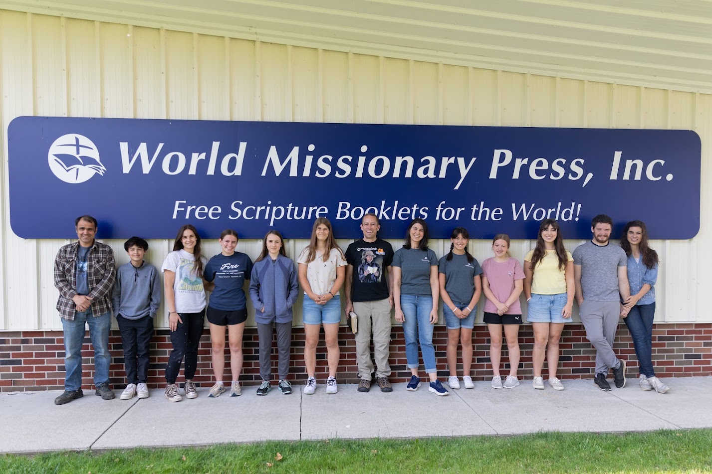
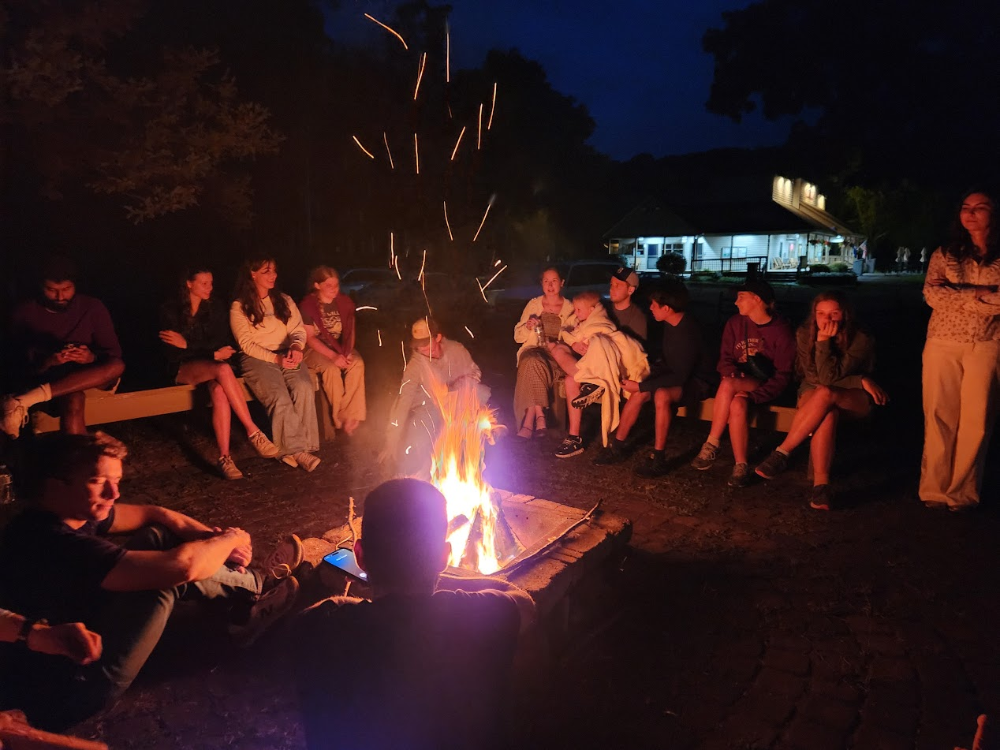
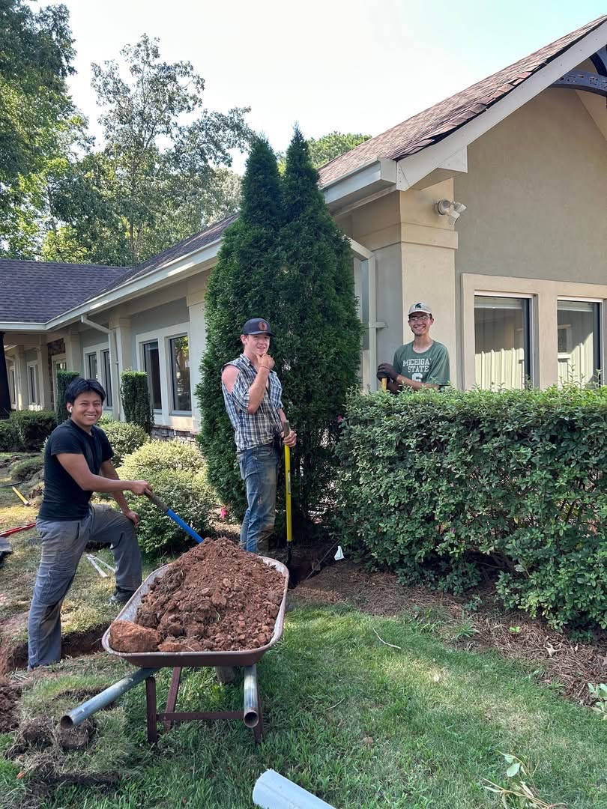
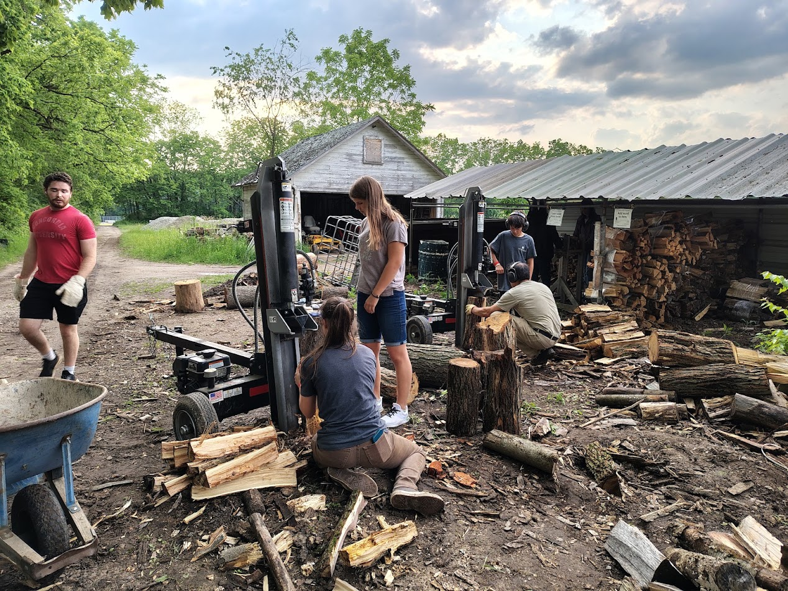
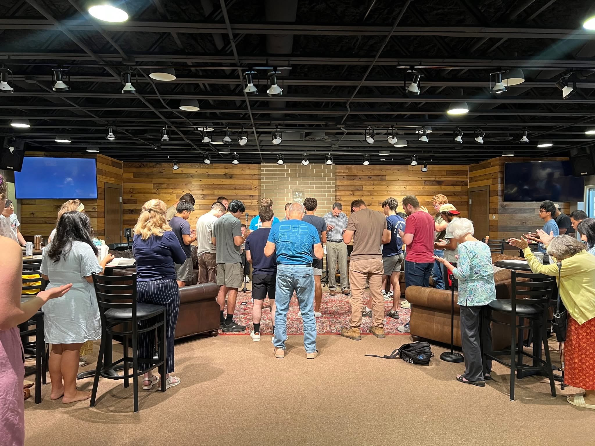
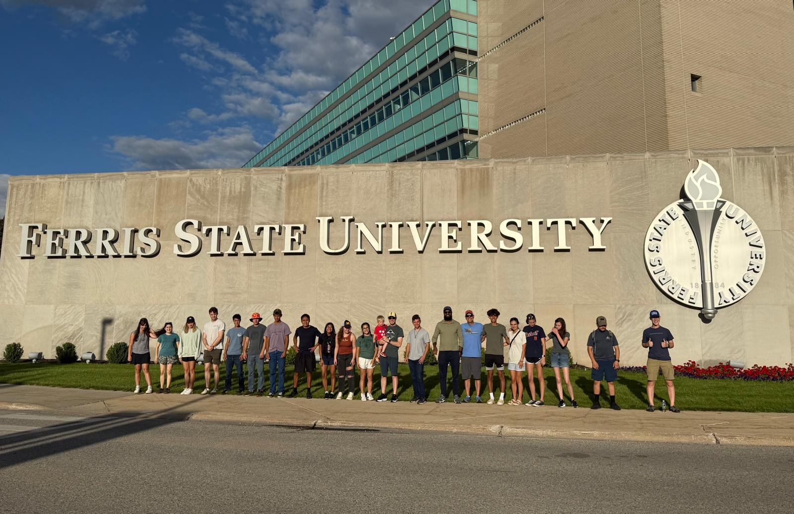
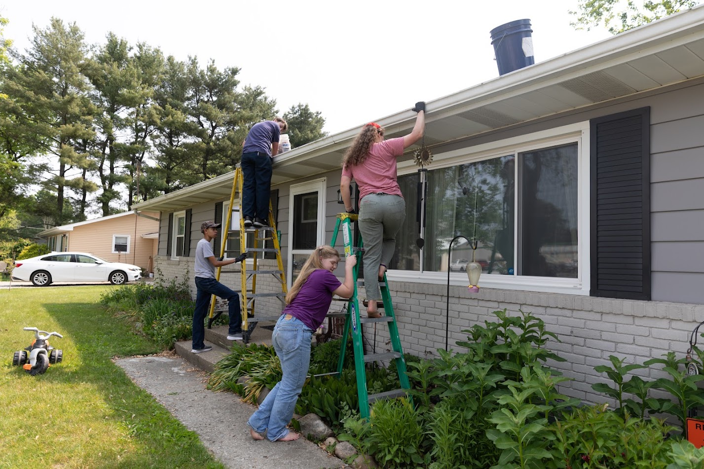
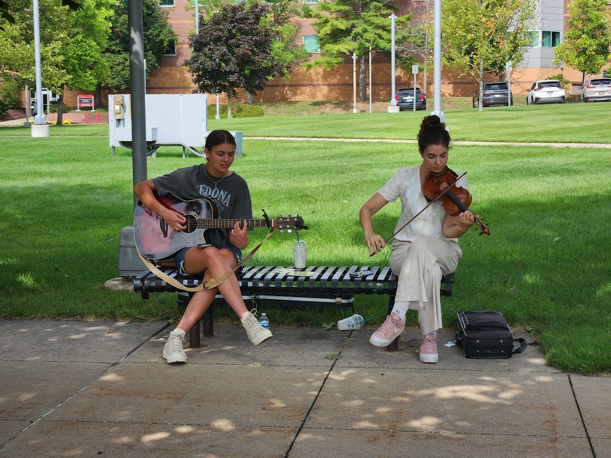

Serving beyond our walls to spread the Gospel, equip the saints, and bring the light of Christ to all nations.
World Missionary Press produces New Testaments and Scripture portions in hundreds of languages to ship around the world. Every June, we send several groups of volunteers (ages 14 and up) to serve for 4 days in their factory.
It is a powerful time of dedicating our hands to the Lord’s work. Alongside the practical work of packing and preparing materials, our groups experience deep worship and sweet fellowship with one another and with the missionaries serving there.
Join the Next TripReaching the next generation with the truth of the Gospel is vital. At the end of August, as college reopens, we embark on a campus evangelism trip to Ferris State University. We stay at CranHill Ranch, a Christian retreat center, providing a base for spiritual preparation and rest.
During this trip, we boldly share Christ with students and invite them to connect with Real Life Campus Ministry and Trinity Fellowship EFC to ensure they have a local church home and supportive community while away at school.
Learn MoreRenew World Outreach empowers believers by developing innovative technology—like solar-powered audio Bibles and portable media systems—to spread God's Word to the most remote and unreached areas of the globe.
Our church takes two 6-day trips each year (Girls in May, Boys in August) to serve at their headquarters. During the day, we offer our diverse, God-given skills to support their operations. The evenings are devoted to spiritual training, earnest prayer, and strengthening our fellowship in Christ.
Serve With Us